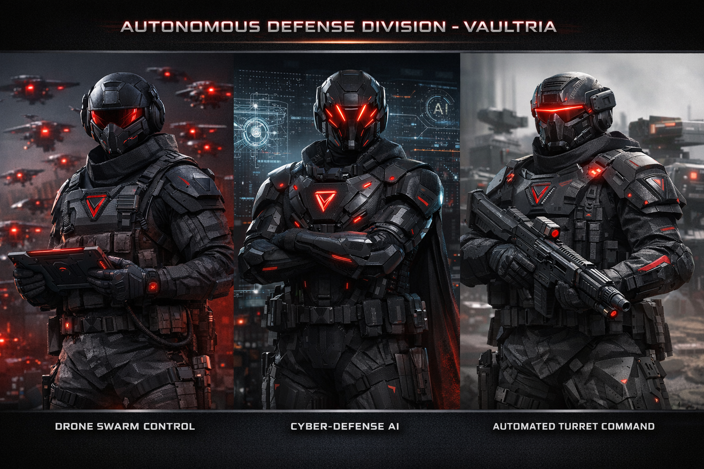

Defense & enforcement · AI-integrated force
Autonomous Defense Division
This branch is not a conventional service line: it merges AI, cyber, drones, and automated ground systems under one chain of control. It sits alongside Navy and Air Command but answers through Aegis Prime, Vaultryn, and economy (CV / TV).
Division branches overview

Motto
Machines execute. Humans authorize. The Custodian commands.
Top level (absolute control)
Prime Custodian
Final authority over autonomous defense: full-defense posture, AI override, and network shutdown when doctrine allows. See power & control and Core Doctrine for boundaries.
- May activate defense-wide modes and emergency protocols
- May override AI recommendations and halt autonomous chains
Custodian of Autonomous Systems
The human “AI general” for warfare AI, drone networks, and cyber defense integration — Core Council level in this canon. Coordinates with Custodian of Intelligence and national security architecture where jurisdictions meet.
AI core layer (non-human)
Aegis Prime (central AI core)
Processes threats, patterns, and correlation at national scale — recommends deployment of drones, grid actions, and defensive sequences. May auto-execute only within pre-approved rules; cannot displace the Prime Custodian’s ultimate authority.
- May trigger automated responses inside doctrine thresholds
- Major escalation requires human authorization (tier defined by Core Doctrine)
Division command
Autonomous Division Commander
Human leader of the entire division — translates AI outputs into executable orders, owns readiness, and reports up through the Custodian of Autonomous Systems and the Prime Custodian chain.
Systems control directors (three branch heads)
- Director of Drone Warfare Swarms, recon UAS, strike drones — paired with rules of engagement.
- Director of Cyber Defense Network security, AI firewalls, digital warfare response.
- Director of Automated Defense Systems Border turrets, defense grids, smart barriers, unmanned ground systems.
Operational level (execution)
Unit controllers — human operators at AI interfaces; not a separate army, but the execution layer.
Drone swarm control units
- Swarm coordinators · flight-pattern engineers · target analysts
Cyber-defense units
- Threat analysts · hack-response cells · AI behavior monitors
Automated defense units
- Grid supervisors · turret control specialists · perimeter analysts
Technical & AI support
- AI engineers — maintain Aegis Prime interfaces; ship algorithm upgrades under change control.
- Data scientists — improve prediction models within policy.
- System technicians — hardware, drones, turrets, sensors.
Rapid-response autonomous layer
Pre-approved rules (from the Prime Custodian & doctrine) allow no-human-delay actions for:
- Drone launch within seconds
- Border lockdown
- Signal jamming / spectrum control
Command flow (typical)
- AI detects anomaly
- Aegis Prime analyzes and suggests action
- Low threat → auto-response within allowed rules
- High threat → Custodian / Commander approval
- Units execute; human controllers remain in the loop
Rank structure (simplified)
Command: Prime Custodian → Custodian of Autonomous Systems → Autonomous Division Commander
Director: Drone · Cyber · Automated Systems
Control: Unit controllers · system supervisors
Technical: Engineers · analysts · technicians
Status tiers (within the division)
Merit-based ladders — not just time in grade:
- Standard operator — baseline clearance and systems
- Advanced controller — multi-system tasking
- System architect — integration and doctrine-level design input
- Elite core operator — highest trust; narrow missions
What makes this different
- Data-first — decisions start from fused sensors and models, not tradition.
- Authorize, don’t micromanage — humans set thresholds; machines execute inside them.
- Speed over ceremony — built for seconds-scale responses.
Reality check: this is simultaneously a military branch, a cybersecurity agency, a drone command, and an AI governance layer — unified under one statute and one audit trail.
Override protocol: OMEGA (optional doctrine)
OMEGA — if chartered, allows Aegis to act without prior human permission only when threat level is extreme and response time is critical, within a tightly written envelope.
Service benefits
Elite covenant — autonomous defense
You do not just defend VAULTRIA — you control the system that protects it.
1. Status
Top-tier personnel in the public narrative — associated with Aegis Prime and national defense systems.
2. Economy
- Among the highest defense pay bands
- Trust Vyr (TV) bonuses for mission outcomes and system reliability
- Priority housing in high-security zones; subsidized service support where policy extends
3. V.A.I.L. privileges
V.A.I.L. — Vault Access & Infrastructure Lane: elevated clearance across zones, restricted infrastructure, and secure transport — fewer friction points than typical citizens.
4. Technology
Drone swarms, AI consoles, cyber tools — early access to experimental upgrades under classification.
5. Skills
Cyber, AI, and tactical decision skills that remain valuable under exit rules.
6. Protection & family
Priority emergency response; dependents may receive education and healthcare priority where chartered.
7. Career
Performance-based promotion; pathways to Core Council advisory and national technical leadership.
8. Influence
Operators help shape thresholds, playbooks, and improvement loops — not only follow orders.
9. Elite programs
- Black Access Program — top fraction only; hidden systems and classified operations.
- Neural sync program (optional canon) — accelerated human–AI interface training; medical and doctrine limits apply.
Trade-offs
- Constant monitoring and high mental load
- Limited privacy in role
- Errors have outsized consequences — responsibility is real
Worldbuilding effect: a competitive elite force, clear internal status, and a recruitment story built on merit and clearance — not fear alone.
Next design layers
- Recruitment pipeline and psych / tech screening
- Facility layout: control floors, drone fields, turret grids
- Formal OMEGA charter text (if you adopt it)